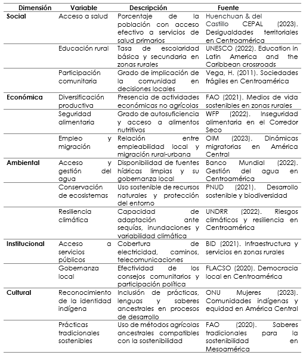
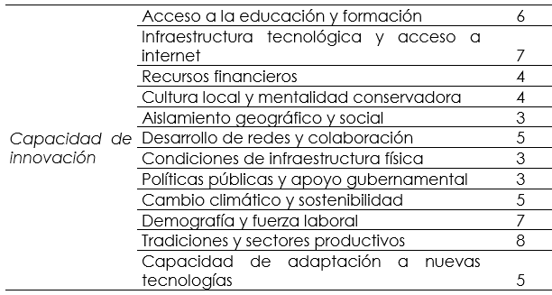
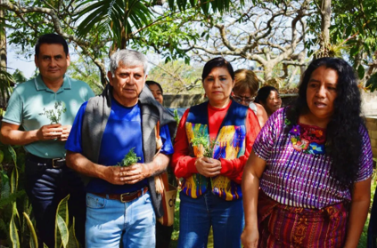
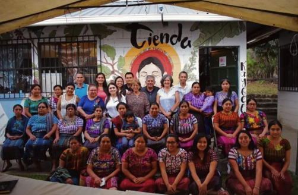
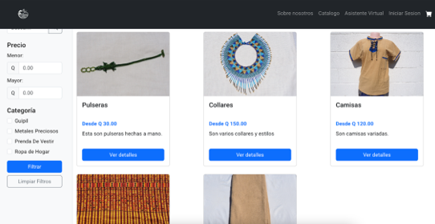
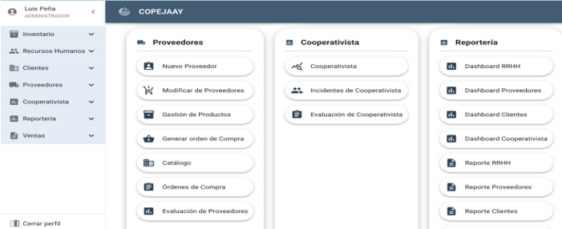
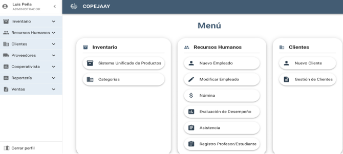
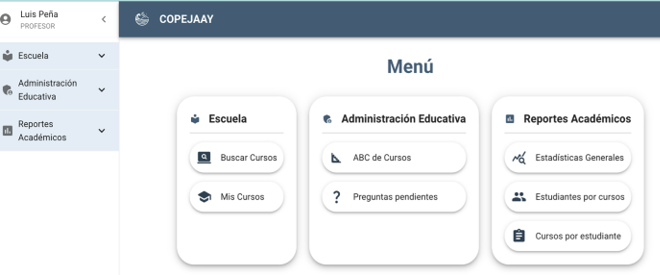
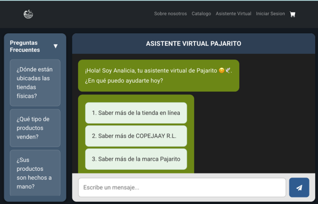

1 Soluciones tecnológicas para comunidades vulnerables de Centroamérica
1.1 Resumen
El artículo presenta un estracto del trabajo de investigación realizado de manera colaborativa entre personas investigadoras de universidades centroamericanas, líderes y miembros de comunidades vulnerables previamente seleccionadas como casos de estudio, cada una con contextos y realidades diferenciadas.
La investigación fue realizada por el Consorcio de Investigación Comunitaria (CIC), el cual fue creado para el abordaje multidisciplinario, basado en los Objetivos de Desarrollo Sostenible de las Naciones Unidas identificados. El CIC tiene como objetivo fortalecer el intercambio y la colaboración científica multidisciplinaria entre personas investigadoras, académicos y sociedad civil de los países en estudio, mediante una red de investigación, innovación y desarrollo tecnológico en temáticas afines a la red.
Como resultado central se obtuvo la identificación y caracterización de variables de desarrollo sostenible desde el enfoque de desarrollo sostenible comunitario, por lo que se pudo establecer que el desarrollo del proyecto de investigación contribuye de manera directa a la aportación de resultados para el cumplimiento de los siguientes Objetivos de Desarrollo Sostenible: ODS 5, Equidad de género, ODS 8, Trabajo decente y crecimiento económico, y el ODS 9, Industria, innovación e infraestructura.
Para lograr los objetivos planteados se contó con la colaboración de estudiantes de la Escuela de Ingenería de Ciencias y Sistemas, quienes a través del Ejercicio Profesional Supervisado EPS, desarrollaron cinco aplicaciones tecnológicas que permitirán a la Cooperativa COPEJAAY R.L. ubicada en Santiago Atitlán Sololá, mejorar sus procesos administrativos y que sus productos sean conocidos tanto a nivel local y nacional como internacional.
1.2 Abstract
This article presents a compendium of collaborative research conducted by researchers from Central American universities, leaders, and members of vulnerable communities previously selected as case studies, each with distinct contexts and realities.
The research was conducted by the Community Research Consortium (CIC), which was created to provide a multidisciplinary approach based on the United Nations Sustainable Development Goals. The CIC aims to strengthen multidisciplinary scientific exchange and collaboration among researchers, academics, and civil society in the countries studied, through a network of research, innovation, and technological development on topics related to the network.
The main result was the identification and characterization of sustainable development variables from a community-based sustainable development perspective. This led to the conclusion that the development of the research project directly contributes to achieving the following Sustainable Development Goals: SDG 5 Gender Equality, SDG 8 Decent Work and Economic Growth, and SDG 9 Industry, Innovation, and Infrastructure.
To achieve these objectives, students from the School of Science and Systems Engineering collaborated. Through their Supervised Professional Practice (EPS), they developed five technological applications that will allow the COPEJAAY R.L. Cooperative, located in Santiago Atitlán, Sololá, to improve its administrative processes and make its products known locally, nationally, and internationally.
1.3 Palabras claves
Comercio electrónico, Chatbot interactivo, Desarrollo sostenible, Innovación tecnológica, Planificación recursos empresariales ERP.
1.4 Introducción
Se cierra un capítulo significativo en el compromiso colectivo por el desarrollo sostenible comunitario con el proyecto titulado “Innovación Tecnológica, Inclusión Social y Gestión Ambiental para la identificación de variables de desarrollo sostenible comunitario en Centroamérica. (9-GT)”
Este trabajo ha permitido articular propuestas que respetan la identidad cultural, promueven la equidad y fortalecen la resiliencia territorial. Se ha visto cómo el impulso a iniciativas productivas con enfoque de sostenibilidad puede generar autonomía económica, y cómo el reconocimiento de liderazgos locales, especialmente de mujeres y jóvenes, transforma las dinámicas comunitarias.
El esfuerzo realizado enriqueció a todos, investigadores, líderes comunitarios, instituciones que apoyaron el proceso; en este artículo se describirán las aplicaciones tecnológicas que son el resultado del diagnóstico realizado utilizando herramienta de Design Thinking y que responden a las necesidades de la Cooperativa COPEJAAY R.L.
1.5 Artículo
Metodología
Trabajo a través de canales de comunicación consensuados, implementación de una metodología de trabajo colaborativo entre los miembros especificados, y una definición de roles claros para cada uno de los miembros, acompañada de su respectiva descripción de expectativas. A lo largo de los 22 meses de ejecución del proyecto, se realizó una serie de reuniones virtuales con el objetivo de lograr la integración del equipo de investigación, así como la interrelación que se logró mediante los tres encuentros en cada una de las comunidades, lo que permitió que a través de la internacionalización se lograra la consolidación del equipo de investigación denominado: Consorcio de Investigación Comunitaria. Otra de las formas de comunicación fue a través de un grupo de WhatsApp, el que permitió una comunicación fluida.
Co-creación comunitaria: esta se logró a través de la participación dinámica y el involucramiento de cada líder comunitario desde la formulación del proyecto, durante el desarrollo del proyecto en cada comunidad; en cada comunidad identificada para ejecutar el proyecto, las actividades coordinadas por el investigador que coordina en cada país el desarrollo del proyecto permitieron el alcance de los objetivos específicos planteados:
Identificar oportunidades de investigación, innovación y desarrollo, que mejoren las condiciones de equidad de género e inclusión, en las comunidades de los países participantes, a través del análisis de sus necesidades y recursos disponibles.
Mapear las oportunidades de investigación versus las capacidades de las comunidades bajo estudio, que permita comprender de manera integral el rol de la ciencia, la tecnología y la innovación, en la resolución de los desafíos y fomentar el desarrollo sostenible de las comunidades rurales vulnerables del área centroamericana.
Aplicación de Design Thinking: esta herramienta sirvió para que en cada una de las comunidades objeto de estudio se identifiquen las necesidades y oportunidades de mejora; en las secciones posteriores se podrá apreciar el uso de la herramienta en cada comunidad y los resultados obtenidos.
Desarrollo de herramientas de innovación social de base tecnológica: luego de la aplicación de Design Thinking, se determinó que para el caso de Guatemala, en la Cooperativa COPEJAAY R. L. se requería de varias herramientas tecnológicas para lograr la innovación en los procesos, las mismas serán descritas en los resultados. De igual forma en el caso de Costa Rica y Panamá se identificó la necesidad de crear una página web para los emprendimientos identificados
1.6 Resultados
Desarrollo sostenible
El concepto de desarrollo sostenible tiene varias décadas de estar siendo analizado; según Brundtland (1987) “el desarrollo sostenible es aquel que satisface las necesidades del presente sin comprometer la capacidad de las generaciones futuras para satisfacer sus propias necesidades.”
La UNESCO (2012), en su libro Educación para el desarrollo sostenible, menciona que la sostenibilidad es un paradigma para pensar en un futuro en el cual las consideraciones ambientales, sociales y económicas se equilibran en la búsqueda del desarrollo y de una mejor calidad de vida.
La Agenda 2030 de la ONU, adoptada en 2015, retoma esta definición para guiar sus 17 Objetivos de Desarrollo Sostenible (ODS), al establecer un marco global que orienta a los países hacia un modelo de desarrollo más equitativo, resiliente y respetuoso del entorno natural (United Nations, 2015).

Figura 1.1: Matriz de algunas variables de desarrollo sostenible comunitario
Variables económicas para el desarrollo sostenible comunitario (Rural)
Las variables económicas son fundamentales para el desarrollo sostenible comunitario, ya que influyen en la capacidad de las comunidades para prosperar de manera sostenible.
La dimensión económica de los Objetivos de Desarrollo Sostenible (ODS), se enfoca en fomentar un crecimiento económico consolidado, inclusivo y sostenible, así como en promover el empleo pleno, productivo y decente para todos. Esta dimensión busca garantizar que el progreso económico no solo genere riqueza, sino que también se distribuya de manera equitativa, reduciendo las desigualdades y asegurando oportunidades para todos los sectores de la población (Naciones Unidas, 2023)
Esta dimensión busca fomentar la economía local mediante la creación de empleos, el apoyo a pequeñas y medianas empresas, y el desarrollo de iniciativas que generen ingresos sostenibles. Se trata de promover prácticas económicas que beneficien a la comunidad y que sean viables a largo plazo.
Busca que se mejoren los medios de vida sin comprometer los recursos naturales. Es importante analizar el empleo y los ingresos, ya que la generación de oportunidades económicas impacta directamente en la reducción de la pobreza. La calidad de la infraestructura (transporte, telecomunicaciones, energía) es esencial para fomentar el crecimiento y facilitar el acceso a servicios y mercados.
A continuación, se presentan algunas de las variables más relevantes: - Ingreso per cápita - Empleo y tasa de desempleo - Diversificación económica - Acceso a financiamiento - Inversión en infraestructura - Consumo responsable - Capacidad de innovación - Sostenibilidad de recursos naturales - Políticas públicas y apoyo gubernamental - Redes de cooperación y colaboración
Cabe mencionar que en la investigación se realizó el análisis de cada una de las variables de las cinco dimensiones de desarrollo sostenible, sin embargo en este artículo se analizará únicamente la capacidad de innovación.
La innovación se concibe como un proceso empresarial capaz de convertir una buena idea en un producto, servicio, estrategia o modelo, que sea aceptado y valorado exitosamente por un segmento de mercado determinado (Guerrero, 2014). Es preciso mencionar que desde 1939, Shumpeter introduce la diferencia entre producción e innovación, siendo la primera la generación de una nueva pieza o conocimiento, mientras que la innovación se concibe como la traducción de la Innovación más Desarrollo (I+D) anteriores, en un nuevo producto/proceso que llega al mercado; y difusión como la imitación de la innovación al ser adoptado por un número grande de competidores. En la tabla 2 se puede observar la ponderación obtenida durante la investigación de cada uno de los factores, colocando la capacidad de innovación en una ponderación de 5 (la escala utilizada fue de 1a 10, siendo 10 el valor otorgado si el factor analizado es importante o se cuenta actualmente con el mismo.

Figura 1.2: Capacidad de innovación
Factores que afectan la capacidad de innovación en una comunidad rural
La capacidad de innovación en una comunidad rural puede verse influida por diversos factores que abarcan aspectos económicos, sociales, educativos y culturales. Algunos de los principales factores que afectan la capacidad de innovación en estas comunidades incluyen:
Acceso a la educación y formación: en Santiago Atitlán, el acceso a una educación de calidad y programas de formación especializados es limitado, sobre todo en educación superior; las universidades que se encuentran en el municipio son privadas y no todos los pobladores tienen acceso a la misma. La falta de conocimientos técnicos o de habilidades para adaptarse a nuevas tecnologías puede ser un obstáculo importante para fomentar la innovación. La educación formal e informal es clave para desarrollar ideas innovadoras y emprendedoras.
Infraestructura tecnológica y acceso a internet: la infraestructura tecnológica y el acceso a internet son fundamentales para la innovación. En las áreas rurales, la conectividad y el acceso a tecnologías avanzadas suelen ser más limitados, lo que dificulta el acceso a información, herramientas de colaboración digital, y plataformas que permiten el desarrollo de nuevas ideas y la expansión de iniciativas innovadoras; el proyecto tuvo la oportunidad de aportar una antena starlink y el pago de servicio del internet por tres meses.
Recursos financieros: el acceso a financiamiento es uno de los principales desafíos para la innovación en las zonas rurales. Las comunidades rurales suelen tener menos acceso a capital de riesgo, préstamos y subsidios destinados a la innovación, lo que limita la posibilidad de desarrollar proyectos innovadores. Las ideas innovadoras requieren inversiones iniciales, y la falta de recursos financieros puede frenar su implementación.
Cultura local y mentalidad conservadora: en algunas comunidades rurales, las tradiciones y la cultura pueden tener una gran influencia en la forma en que se perciben y adoptan las ideas nuevas. Las personas pueden ser reacias al cambio debido a la fuerza de las tradiciones o por temor a lo desconocido, lo que puede dificultar la aceptación de nuevas tecnologías, prácticas o modelos de negocio innovadores.
Aislamiento geográfico y social: el aislamiento geográfico puede limitar la interacción con otras comunidades, expertos, o mercados que fomenten la colaboración y el intercambio de ideas. La innovación muchas veces surge a través de redes de contactos y colaboraciones, y las comunidades rurales, al estar alejadas de centros urbanos y de grandes redes de innovación, pueden encontrar dificultades para estar al tanto de nuevas tendencias y tecnologías.
Desarrollo de redes y colaboración: la falta de redes de apoyo, como asociaciones de empresarios, incubadoras de empresas o centros de innovación, puede limitar la capacidad de las comunidades rurales para generar soluciones innovadoras. Las comunidades rurales a menudo carecen de estos espacios de colaboración que permiten compartir experiencias, recursos y conocimientos.
Condiciones de infraestructura física: el estado de las infraestructuras básicas (carreteras, transporte, electricidad, entre otros) también influye en la capacidad de innovar. La falta de una infraestructura adecuada puede dificultar el acceso a mercados, la distribución de productos innovadores y la implementación de nuevas tecnologías.
Políticas públicas y apoyo gubernamental: las políticas gubernamentales juegan un papel determinante en el fomento de la innovación. En muchos casos, las políticas públicas y los incentivos para la innovación no llegan de manera efectiva a las zonas rurales. La falta de incentivos fiscales, programas de apoyo o subvenciones específicas para la innovación rural puede reducir las oportunidades de desarrollo innovador.
Cambio climático y sostenibilidad: en las comunidades rurales, especialmente aquellas que dependen de la agricultura, los efectos del cambio climático pueden ser tanto un desafío como una oportunidad para innovar. Las presiones ambientales pueden fomentar la búsqueda de soluciones innovadoras para mejorar la sostenibilidad de los recursos naturales, pero también pueden limitar la capacidad de las comunidades para adaptarse a los cambios debido a la falta de recursos o tecnologías adecuadas.
Demografía y fuerza laboral: la edad y composición de la población también juegan un papel importante en la capacidad de innovación. Si la comunidad rural está envejecida o tiene una población joven que migra a las ciudades en busca de mejores oportunidades, la falta de talento y la escasez de mano de obra especializada pueden dificultar la implementación de ideas innovadoras.
Tradiciones y sectores productivos: en algunas comunidades rurales, la innovación puede estar limitada por la naturaleza de las actividades productivas tradicionales. Si la comunidad depende principalmente de actividades como la agricultura o la ganadería, puede haber una resistencia al cambio, ya que las personas se sienten más cómodas con métodos establecidos que han funcionado a lo largo de los años.
Capacidad de adaptación a nuevas tecnologías: el uso de nuevas tecnologías puede ser un factor clave para la innovación en las comunidades rurales, pero la falta de capacidad para adaptarse a ellas puede frenar el desarrollo. La introducción de tecnologías como la digitalización, la automatización o las energías renovables requiere de una capacitación adecuada, y la resistencia al cambio puede ser un obstáculo.
Caso de estudio de Guatemala
El Consorcio de Asociaciones de Artesanas del Municipio de Santiago Atitlán, Departamento de Sololá, que en adelante se denominará el Consorcio, quienes comercializan sus productos a través de la Cooperativa Integral de Comercialización “TZ’IKIN JAAY”, Responsabilidad Limitada COPEJAAY R.L. El Consorcio está integrado por once organizaciones de Mujeres; constituye una iniciativa desde y para las mujeres indígenas Tz’utujiles que nace legalmente en el año 2010, para contribuir a transformar la problemática que sufren las mujeres de Guatemala y particularmente las mujeres tz’utujiles de Santiago Atitlán.
El Consorcio coordina esfuerzos a nivel local y departamental con otros actores, para buscar alternativas de solución a las diferentes situaciones adversas que viven las mujeres, enfocándose en la promoción y fortalecimiento del ejercicio de sus derechos individuales y colectivos como mujeres, tanto del área urbana, como del área rural.
El Consorcio ha coordinado con organizaciones de la sociedad civil, especialmente con organizaciones de mujeres indígenas, tanto de Santiago Atitlán, como de otros municipios del departamento de Sololá y ha desarrollado acciones enfocadas en el proceso de promoción y fortalecimiento de la participación política de las mujeres tz’utujiles, en los espacios de toma de decisiones en el sistema de consejos de desarrollo urbano y rural. En las figuras 1 y 2 se pueden observar dos momentos importantes en el inicio del proyecto; en la figura 1 se observa el ritual maya para agradecer el inicio del proyecto y en la figura 2, el grupo de investigadores de las tres universidades y los representantes de las comunidades.

Figura 1.3: Investigadores y artesanas del Consorcio y de COPEJAAY R.L Municipio de Santiago Atitlán
La Cooperativa COPEJAAY R.L. está conformada por mujeres que buscan el beneficio de sus asociadas y sus familias, por medio del empoderamiento económico en la producción y comercialización de productos textiles con altos estándares de calidad y excelente servicio al cliente. El objetivo de la Cooperativa es brindar oportunidades de ingreso digno y justo a mujeres por igual, con el propósito de impulsar el desarrollo humano dentro del municipio de Santiago Atitlán para la superación de las relaciones de desigualdad y discriminación, y disminuir los índices de pobreza y pobreza extrema en el departamento de Sololá.
Durante varios talleres y sesiones de trabajo con mujeres que forman parte del Consorcio y de la COPEJAAY, se han identificado los factores que afectan el desarrollo sostenible comunitario que influyen en las comunidades para prosperar de manera sostenible. De igual manera se pudo identificar que para lograr la capacidad de innovación es importante que se cuente con herramientas y aplicaciones tecnológicas.

A continuación se hace una breve descripción de las herramientas tecnológicas que fueron desarrolladas por los estudiantes de Ingeniería en Ciencias y Sistemas para atender las necesidades de la Cooperativa COPEJAAY R.L.
Implementación de plataforma de comercio electrónico con integración de pasarela de pago para la Cooperativa Integral de Comercialización Tz’ikin Jaay en Santiago Atitlán-Sololá (elaborada por Esdras Rodolfo Toc Hi)
El proyecto tuvo como objetivo fundamental la implementación de una plataforma de comercio electrónico que sirva como un puente digital para la Cooperativa Integral de Comercialización Tz’ikin Jaay, ubicada en Santiago Atitlán, Sololá. La iniciativa surgió ante la necesidad de modernizar los canales de comercialización de la Cooperativa y aprovechar las tendencias actuales del mercado digital, permitiendo así ampliar su alcance tanto a nivel regional como internacional, y facilitando las ventas fuera de su ubicación física tradicional.
La implementación de una plataforma de comercio electrónico busca resolver estas limitaciones al ofrecer un sistema digital accesible, eficiente y seguro, que permita a la Cooperativa comercializar sus productos de manera rápida y efectiva mediante internet. La primera etapa será la habilitación de la aplicación a nivel nacional, en tanto la Cooperativa crezca y logre hacer alianzas con servicios courier, para ampliar la venta al exterior. En la Figura 3 se observa el catálogo de productos que se encuentra en fase de construcción.

Figura 1.4: Catálogo de productos
El Segundo proyecto de innovación tecnológica desarrollado para uso exclusivo de la Cooperativa Copejaay es un ERP que incluye los módulos de proveedor, cliente, recursos humanos, monitoreo y reportería, el cual se describe a continuación:
Desarrollo de módulos de proveedor, cliente, recursos humanos, reportería y monitoreo del sistema de planificación de recursos empresariales para Cooperativa Integral de Comercialización Tz’ikin Jaay Responsabilidad Limitada. Copejaay R.L. (elaborados por Marco Antonio Xocop Roquel)
El proyecto consiste en el desarrollo e implementación de un sistema de planificación de recursos empresariales (ERP) especializado para la Cooperativa Integral de Comercialización Tz’ikin Jaay, Responsabilidad Limitada (Copejaay R.L.). El sistema integra cuatro módulos fundamentales diseñados específicamente para atender las necesidades operativas y administrativas de una cooperativa textil conformada por mujeres artesanas indígenas.
El ERP está diseñado para optimizar los procesos de gestión administrativa, mejorar la trazabilidad de operaciones, facilitar la toma de decisiones basada en datos y potenciar las capacidades operativas de la Cooperativa sin comprometer su identidad artesanal y comunitaria. La implementación de este sistema representa un paso estratégico hacia la modernización tecnológica que permitirá a Copejaay R. L. mantener su competitividad en un mercado globalizado mientras preserva sus valores tradicionales.
- Módulo de proveedores
- Módulo de recursos humanos
- Módulo de cliente
- Módulo de reportería y monitoreo

Figura 1.5: Menú principal de herramienta ERP para la Cooperativa Copejaay
Para integrar el ERP diseñado exclusivamente para la Cooperativa se implementaron los módulos de ventas e inventario, los que se describen a continuación:
Implementación de módulo de ventas e inventario de una planificación de recursos empresariales para Cooperativa Integral de Comercialización Tz’ikin Jaay Responsabilidad Limitada. Copejaay R. L. (elaborado por José Fernando Álvarez Morales)
El proyecto consiste en el desarrollo de un sistema de planificación de recursos empresariales (ERP) web, diseñado específicamente para optimizar la gestión operativa de la Cooperativa Copejaay mediante la implementación de dos módulos funcionales integrados: gestión de inventario y gestión de ventas. Se trata de una aplicación web completa que centraliza los procesos de control de inventario y gestión comercial en una plataforma unificada. El sistema opera bajo una arquitectura cliente-servidor que permite el acceso concurrente de múltiples usuarios autorizados para realizar operaciones de registro, consulta y análisis de información empresarial.
- Módulo de gestión de inventario
- Módulo de gestión de ventas

Figura 1.6: Menú principal de herramienta ERP para la Cooperativa Copejaay
La cuarta herramienta digital desarrollada responde a las necesidades de formación a distancia.
Desarrollo de una plataforma integral de gestión educativa y creación de contenido para la Cooperativa Integral de Comercialización Tz’ikin Jaay, Responsabilidad Limitada. Copejaay R. L. (elaborada por José Ottoniel Sincal Guitzol)
Dado los aspectos generales la solución acordada será generada por medio de un sitio web responsive para la gestión de contenido y creación del sistema digital educativo. El acceso a dicha plataforma será únicamente para las socias que conforman la Cooperativa por medio de dos roles designados, según su función dentro del mismo: maestro para puestos administrativos y estudiante para el personal. Dicha separación se hará con el objetivo de mantener separadas ciertas acciones que solo algunas socias podrán realizar.
Las acciones que contendrá la plataforma abarcarán desde la gestión de cursos y lecciones, búsqueda y asignación de cursos deseados, participación en foro de discusiones o dudas respectivas a cada curso hasta la generación de reportes de seguimiento personal o colectiva.

Figura 1.7: Menú de gestión educativa y creación de contenidos
Esta plataforma representa una solución sofisticada para todas las acciones básicas requeridas que ayuden a fomentar el desarrollo tanto personal como laboral, por medio de la disposición de material educativo al alcance y ritmo que cada socia disponga.
- Módulo de gestión de contenidos
- Módulo de aprendizaje en línea
- Módulo de comunicación y colaboración
- Módulo de seguimiento
Otra oportunidad para implementar innovación tecnológica fue la creación de un chatbot, que es un programa informático que simula la conversación humana con un usuario final. El mismo está equipado con inteligencia artificial con IA conversacional como el procesamiento del lenguaje natural PLN, cuyo objetivo es comprender las preguntas de los usuarios y automatizar respuestas. A continuación la descripción del desarrollo de la aplicación:
Implementación de asistente virtual por medio de modelos de aprendizaje para una adecuada experiencia de usuario y asistencia al cliente en Copejaay R. L. (elaborado por Mario José Rodríguez Vásquez)
La implementación de un chatbot interactivo que sirva como asistente virtual automatizado para los clientes de la marca “Pajarito”. Este chatbot integrará tecnología de procesamiento de lenguaje natural (PLN) y modelos de IA avanzados, como los ofrecidos por OpenAI, con el almacenamiento de datos y contextualización a través de ChromaDB. Las principales funcionalidades del asistente virtual serán las siguientes:
informará a los usuarios sobre los diferentes métodos de pago disponibles, plazos de entrega, opciones logísticas, optimizando la experiencia de compra o información de la marca “Pajarito”.
Asistencia primaria al cliente: responderá preguntas frecuentes, tales como consultas sobre la disponibilidad de productos, políticas de envío, tiempos de entrega y otras consultas comunes.
Para asegurar el éxito del proyecto se tomarán medidas preventivas para mitigar posibles riesgos y vulnerabilidades, tanto técnicas como de experiencia de usuario. A continuación, se describen las principales:
Disponibilidad del servicio: el servicio será alojado en una infraestructura confiable de servidores, garantizando alta disponibilidad con un tiempo de actividad máximo. Para minimizar el riesgo de interrupciones se implementarán sistemas de respaldo y redundancia, asegurando que el servicio se mantenga operativo, incluso en casos de fallas técnicas o caídas del servidor.
Fallas en la interacción del chatbot: se crearán flujos conversacionales robustos y correctamente implementados para evitar que el chatbot se quede atascado o brinde respuestas incorrectas. Además, se incorporarán mecanismos de fallback que permitirán transferir al cliente a una asistencia humana en caso de que el chatbot no pueda resolver la consulta o se presente un problema técnico.
Actualización del sistema: el sistema será diseñado de manera flexible para permitir actualizaciones continuas y mejoras sin afectar la operatividad. Esto permitirá ajustar el modelo de IA y añadir nuevas funcionalidades en función de la evolución de las necesidades del negocio o los avances tecnológicos, manteniendo el sistema competitivo en el mercado.

Figura 1.8: Inicio del asistente virtual para la Cooperativa Copejaay R. L.
Para lograr que las diferentes herramientas tecnológicas desarrolladas por los estudiantes de Ingenieria en Ciencias y Sistemas funcionen adecuadamente, se compró una antena satelital starlink y todo los complementos necesarios para lograr que la señal de internet fuera óptima en las instalaciones del Consorcio y Cooperativa; de igual manera, mediante recursos del proyecto se pagó el servicio de internet por un período de seis meses; los pagos subsecuentes fueron absorbidos por las artesanas; de igual manera se compró un POS con el objetivo que se puedan realizar compras con tarjeta de crédito, lo que ha mejorado significativamente las ventas de la Cooperativa.
1.7 Conclusiones
La infraestructura tecnológica de la Cooperativa fue notablemente mejorada mediante la instalación de una antena de internet satelital; asimismo, la adquisición de un POS para la venta de productos, un equipo de cómputo, impresora y otros equipos menores y suministros.
Se diseñaron aplicaciones para llevar controles automatizados de: módulo de ventas e inventario, módulos de proveedor, cliente, recursos humanos, reportería y monitoreo para el sistema de planificación de recursos empresariales de la Cooperativa.
Se implementó un asistente virtual; se logró desarrollar una plataforma integral de gestión educativa y se implementó una plataforma de comercio electrónico que inicialmente atenderá a clientes nacionales. La mejora tecnológica implementada rompe con el aislamiento de información en diferentes campos y permite la inclusión de comunidades vulnerables.
1.8 Recomendaciones
Es importante en este tipo de proyectos promover la participación de las comunidades en la búsqueda de soluciones ajustadas a las condiciones reales de concreción para no causar desinterés o incredulidad del trabajo con las universidades.
Entre los aspectos relevantes para lograr sostenibilidad y equidad será necesario mantener procesos colaterales que ofrezcan alternativas viables, tanto social, cultural, tecnológica y económicamente; que fortalezcan y ayuden a mejorar la calidad de la educación y la participación ciudadana en mujeres y niñas.
Se requiere de un ecosistema fortalecido en el territorio, de tal manera que sea posible mejorar infraestructura física (vías de acceso, espacios en óptimas condiciones para hospedajes de visitantes, fortalecimiento y creación de emprendimientos, habilitación de senderos y mayor acceso a internet); fortalecer capacidades de servicio de alimentación a diferentes horas del día y desarrollo de una plataforma digital que facilite la divulgación y promoción de los lugares turísticos.
Para disminuir la brecha digital que existe en las comunidades rurales es imprescindible un programa de formación y capacitación que permita fortalecer las competencias digitales de los miembros de cada comunidad.
1.9 Referencias
[1] Banco Internacional de Reconstrucción y Fomento Banco Mundial. (2019). Hacia una Centroamérica más resiliente: Pilares para la Acción. https://thedocs.worldbank.org
[2] Banco Mundial [World Bank]. (1992). Governance and Development. Washington, DC: The World Bank.
[3] Banco Mundial (2017). Mejorar la gobernanza es fundamental para garantizar un crecimiento equitativo en los países en desarrollo.
https://www.bancomundial.org[4] Banco Mundial (2023a) Guatemala Panorama general. https://www.bancomundial.org/es/country/guatemala/overview
[5] Brundtland (1987) Desarrollo y cooperación económica internacional: Medio Ambiente. Informe de la Comisión Mundial sobre el Medio Ambiente y el Desarrollo https://digitallibrary.un.org/record/139811?v=pdf
[6] Comisión Económica para América Latina y el Caribe [CEPAL].(2023). La Agenda 2030: ¿Está América Latina y el Caribe en vías de alcanzar los Objetivos de Desarrollo Sostenible para 2030? https://www.cepal.org
[7] FAO (2007). The state of food and agriculture, 2007: paying farmers for environmental services. archive.org
[8] Guerrero, A. (2017). El mercado de Artesanía Textil, municipio de Santiago Atitlán Sololá, Sistema de innovación local como estrategia para mejorar la competitividad de las Mipymes. researchgate.net
[9] PNUMA (2021). Una mirada a la dimensión ambiental de los ODS en Iberoamérica. segib.org
[10] Programa de las Naciones Unidas para el Desarrollo (PNUD). (2021). Documento del programa para Panamá (2021-2025). undp.org
[11] Schumpeter, J. (1939). Business Cycles: A theoretical, historical and statistical analysis of the capitalist process. Nueva York, Toronto, Londres: McGraw-Hill.
[12] UNESCO (2012). Educación para el desarrollo sostenible. slideshare.net
[13] UNESCO (2013). Declaración de Hangzhou: colocar la cultura en el centro de las políticas de desarrollo sostenibles. unesco.org
[14] UNESCO (2020). Textos fundamentales de la Convención para la Salvaguardia del Patrimonio Cultural Inmaterial de 2003, edición 2020. unesdoc.unesco.org
[15] UNESCO (2022). Education in Latin America and the Caribbean at a crossroads. cepal.org
[16] Vega, H. (2011). Centroamérica: un territorio vulnerable con sociedades frágiles. Reflexiones sobre el cambio climático y su relación con el desplazamiento humano. Revista Migraciones Forzadas, (14), 69–88. unirioja.es